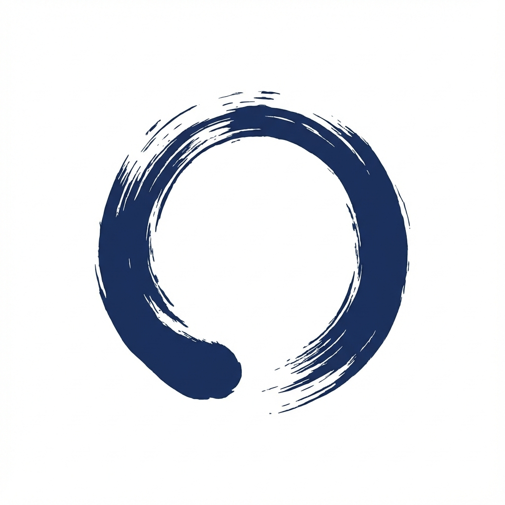

不断捨離 — 全体フロー
「決断しないで、退避する」／ 円が閉じきらなくていい。優柔不断の肯定。
凡例
退避の経路— 撮って候補に退避
手放しの経路— 変容の儀式
画面遷移・戻る
開いた円相＝退避（未完・肯定）
閉じた円相＝手放し（完結）
退避ループ（止めずに撮る → 候補へ）
手放しの儀式（削除ではなく変容）
カメラ FAB
撮影 → 判定
退避して次を撮る（ループ）
退避して書き留める
退避完了 → 自動で候補へ
カードを開く
概要 ⇄ 編集
写真を開く
記録を開く
候補が空
やっぱり候補に戻す
手放す
変容
手放し完了 → 捨離へ
1候補（ワークベンチ）
ホーム。表紙写真＋枚数バッジのカード。中央にカメラFAB。
1・空エンプティ
候補が空のとき。「迷いはここに一時退避」。
2撮影
1枚撮る → その場で複数枚追加。✕やめる／↻撮り直す。
3捨てたい度を選ぶ
今すぐ／捨てたい／迷い／残す。退避して次へ or 書き留める。
4退避アニメ
青の円相が一筆で閉じる → 自動でカメラへ戻る。
5詳細＝概要（銘々札）
品名を主役に、写真カルーセル・記録の要約・「手放す」。
6詳細＝編集（記録）
品名・度・理由・想いのメモ。写真ロールの並べ替え／表紙設定。
7全画面ビューア
写真をスワイプ閲覧。概要・編集の写真から開く。
8手放す確認
鈍色（にびいろ）の静かな弔いトーン。円相グレーアウト。
9手放し完了アニメ
朱の円相が結ばれる。写真が灰へ薄れ、記憶へ。捨離へ。
10捨離（タブ）
手放し済みの一覧。グレー＋「手放し済み」帯。候補と同じ器。
11捨離の詳細
朱の閉じた円相バッジ。読み取り専用で振り返る。候補に戻せる。